VERIFIED. Independent confirmation passed all eight criteria. A separate final audit confirmed the public route, served SHA and report evidence.
7 October 2026. Preview https://pr-1033.clarity-video.workers.dev at head and CI merge commit 9e4b5a559df8706d58ad9eca0431ac89e165ddb3. Base 5841ffd0003fe751f54c5bca27ae66098af1e77a. The CI merge commit equals head because this branch includes the base.
| Check | Result | Evidence |
|---|---|---|
| First logo box ticked | pass | Rendered checkbox and persisted page/default match. |
| New page inheritance | pass | GET page document contains the default asset. |
| Partner logo unticked | pass | Page changes; account default remains Acme. |
| Settings Branding | pass | Rendered Acme matches GET brand settings. |
| Delete default | pass | Library delete returns account to legacy with no asset. |
| Error toast | pass | Real request aborted; toast rendered and default unchanged. |
| Canvas one click | pass | One Edit click after hovering the logo opens the loaded picker and it stays open. |
| Backfill run/rerun/undo | pass | Final preview dry/apply migrated 1; rerun wrote nothing; undo removed it; repeated undo absent. |
| Typecheck/lint/tests | pass | 502 workspace, 167 router, 3314 editor and 341 script tests passed. Test type errors 207, at the current budget of 207. The final log is typecheck-merged.log. |
| Structure/security | pass | Timestamp collision fixed. Both re-reviews clean. Manual C1-C10 catalog completed. |
| Independent confirmation and artifact audit | pass | Fresh gpt-6-astra browser and backend pass confirmed criteria 1-8 and audited screenshots/assertions. A separate final audit also confirmed the public route, served SHA and corrected typecheck evidence. |
| Preview critical flow and e2e | pass | Both steps passed in run 37622362700. |
| Auth error JSON trap | pass | Password auth returned identity; signed-in doctor verified /auth/me body. |
| Editor API authorization | pass | Retired /editor/api/* route returns 410. Current /api/tree routes use session-derived identity, confirmed by the independent code security review. |
| Deep link coexistence | pass | The two existing route-coexistence tests passed through a guarded copy with real browser auth. The temporary published QA page at /page/cerura rendered its text and loaded partner logo before cleanup. |
| Media load | pass | Owned preview image asset resolves available and image naturalWidth > 0. |
| Warnings | warn | Sentry writes blocked. Intentional offline toast test blocks brand PUT and outstanding font GETs. Cloudflare/DNS failures recovered on retry. The seeded every-block public fixture /page/4uxp6b returns 404; this is a fixture follow-up. A newly published QA page supplies the public check. Existing React Doctor test-mock diagnostic retained. |
| Soft review cut retained | warn | Dated production dry-run snapshot remains operational context. Unused results map removed. |
Earlier before evidence remains valid for the reported defects. The current preview repeats the after flow.
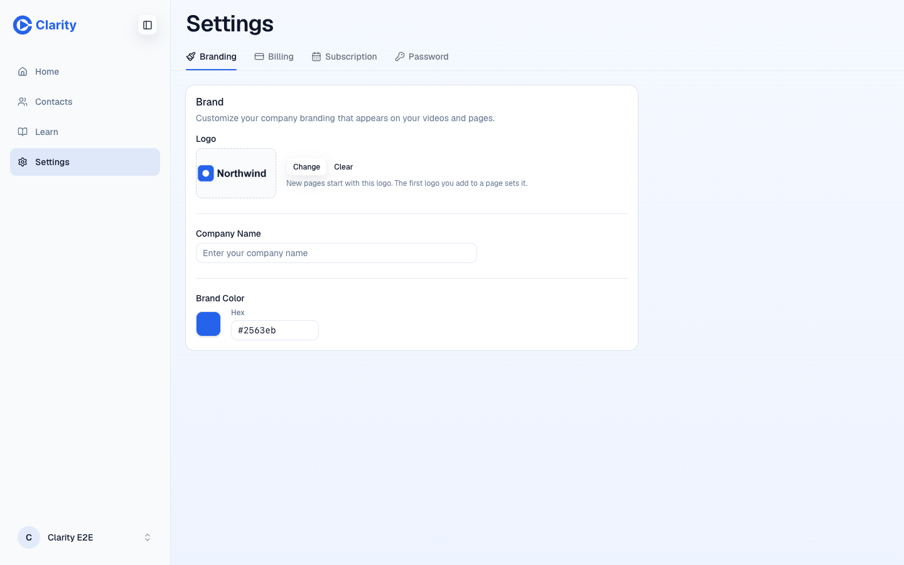
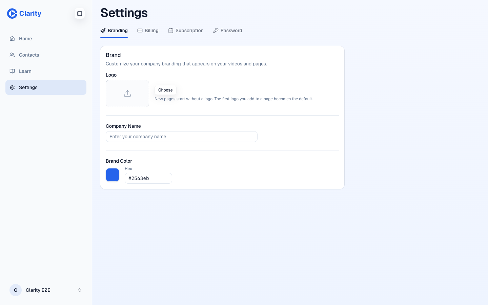
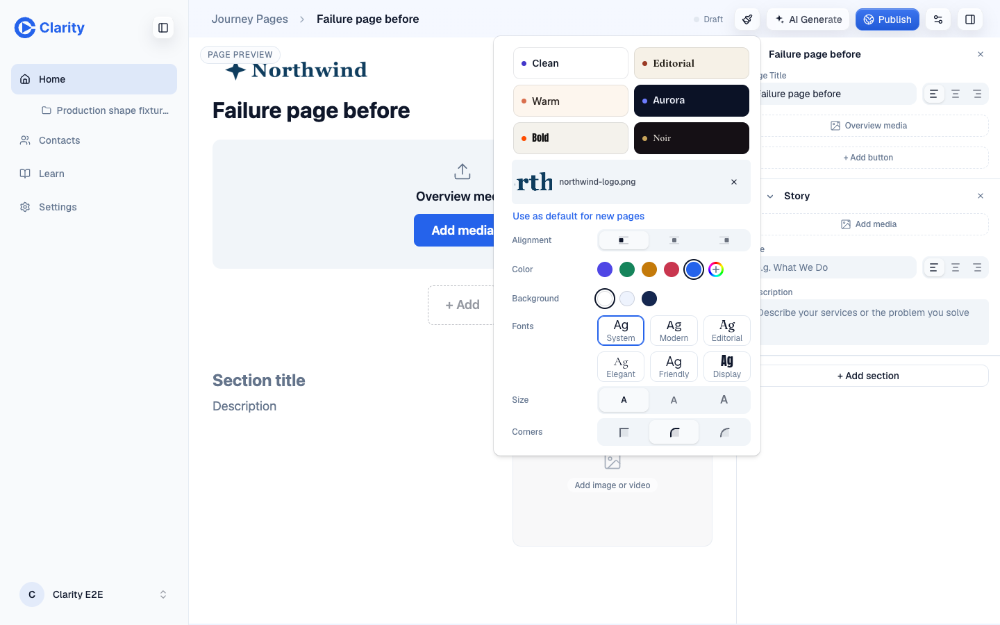
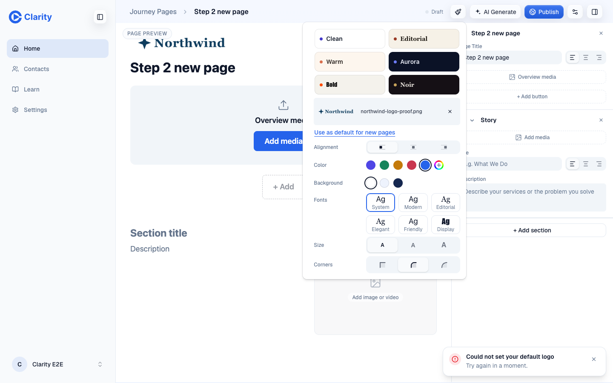
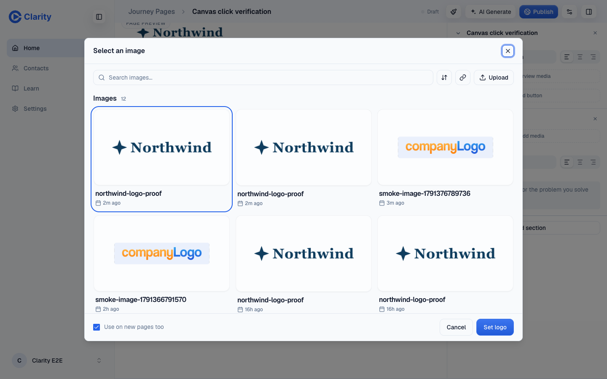
All after screenshots use mock test logos on the preview. Page URLs and persisted asset comparisons are recorded in final/flow-QA/log.json.
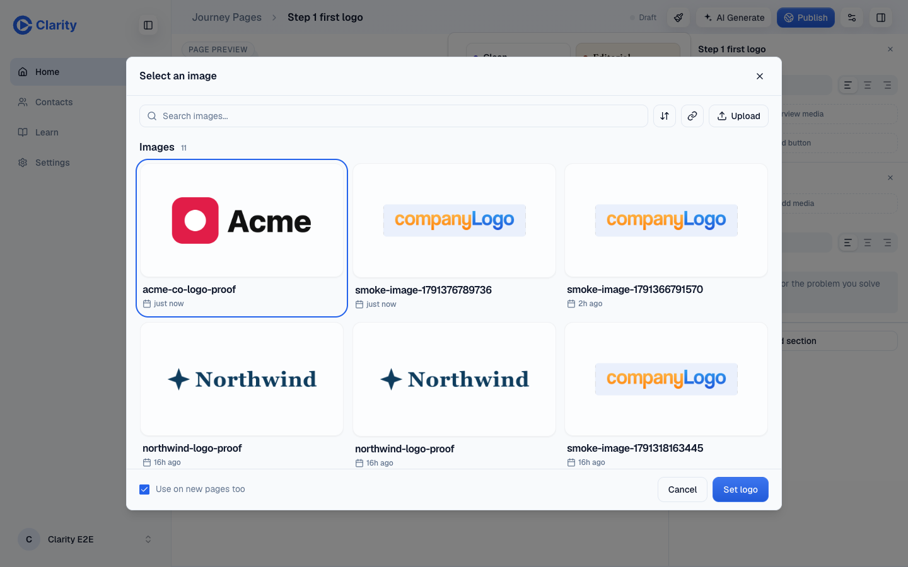
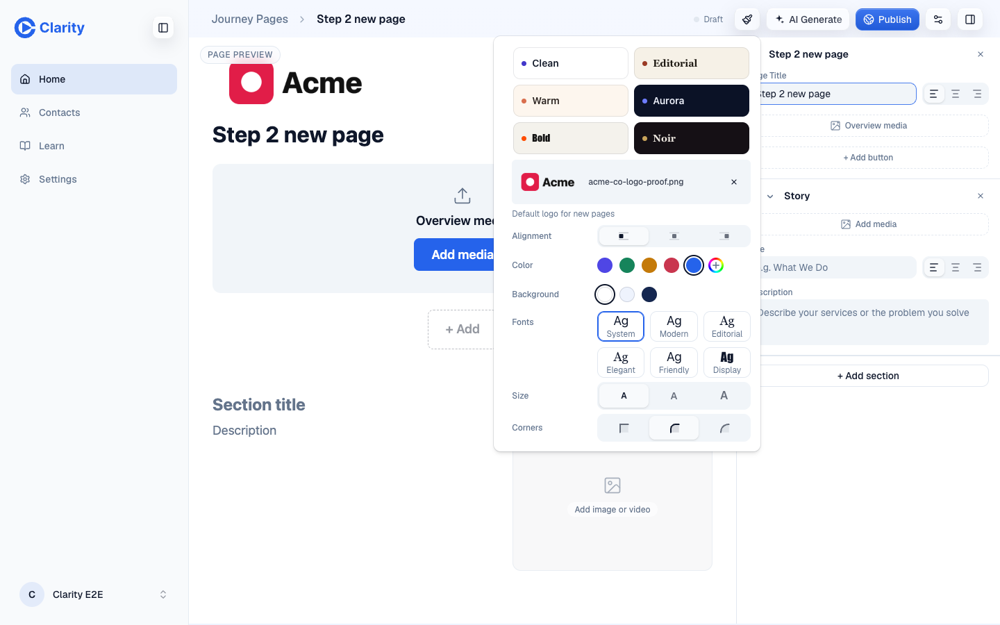
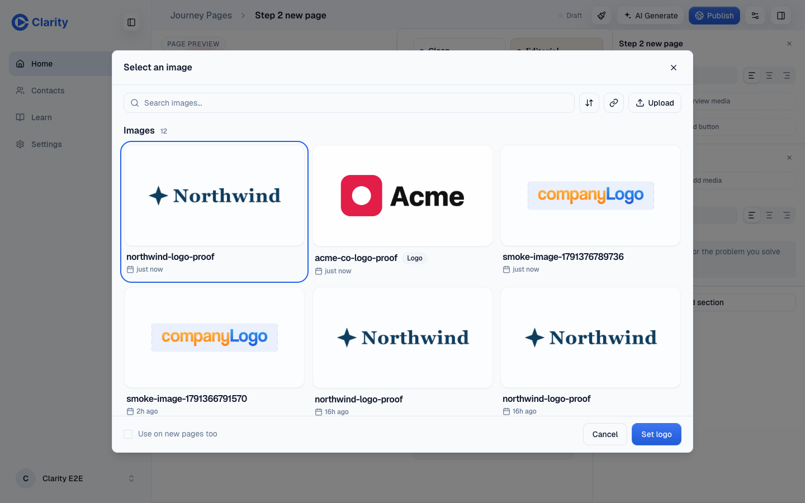

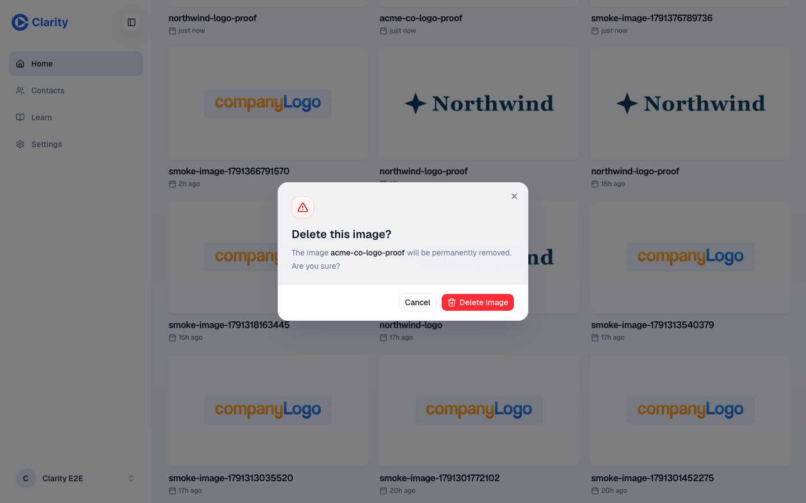
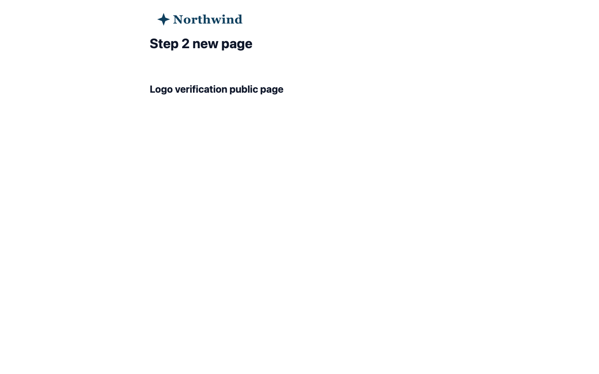
Final preview dry run found one eligible mock old-app account. Apply migrated it, a rerun made no changes, undo deleted its Library image and default, and repeated undo reported undo_not_found. The independent D1 read confirmed both values absent. The initial Basic fixture was then restored. Its Settings image loads and its new page copies the migrated asset. QA branding was restored from its saved row. All five scratch pages and the remaining scratch partner asset were deleted after the independent audit. Cleanup returned 200 and confirmed the saved QA default.

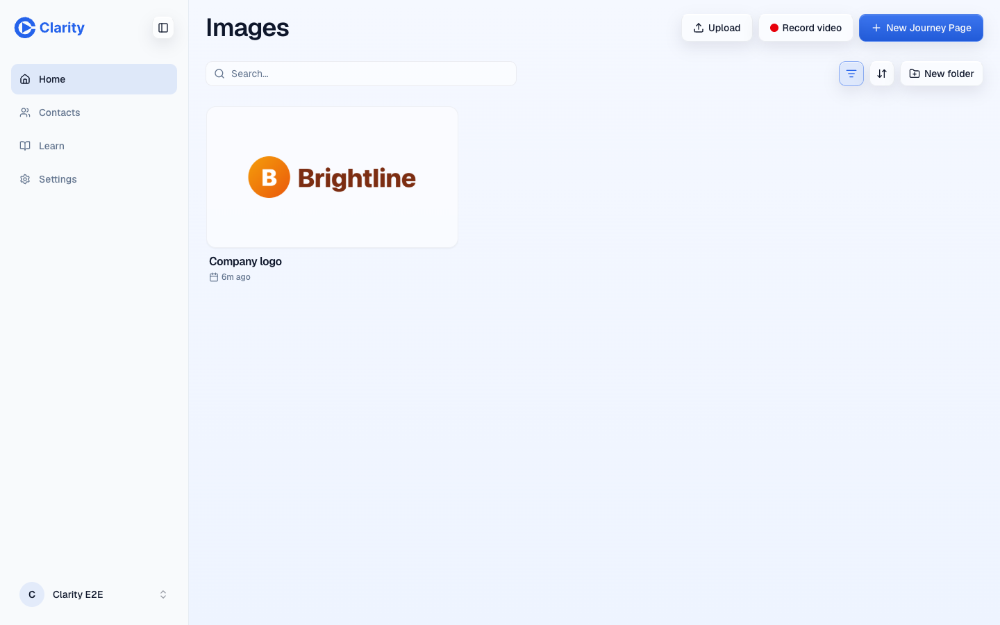
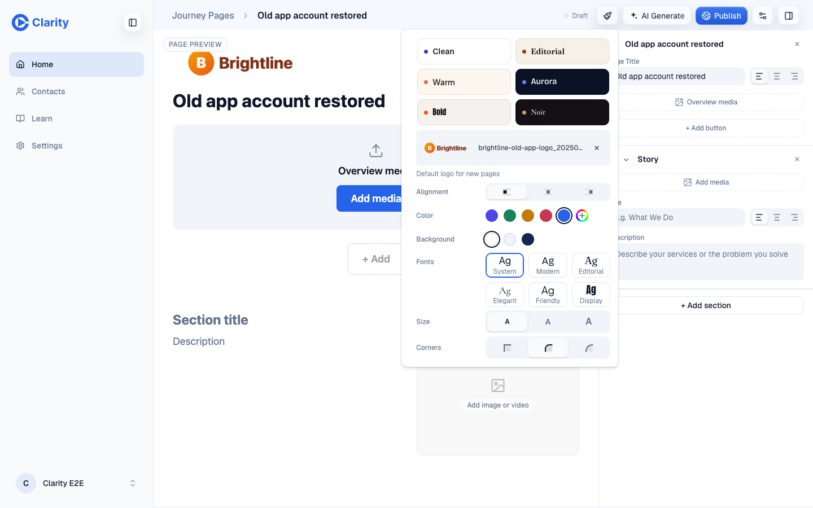
The browser aborts every non-GET outside the two isolated preview origins and blocks telemetry writes. Reported console resource errors came from those blocks or the intentional offline test. Key real requests passed: POST /auth/password, POST and PUT /api/journey-pages, PUT /api/tree/brand, DELETE /api/tree/nodes and refetched GET brand/page responses. No response data was mocked.
The same-millisecond existing-row adoption and explicit-clear tests failed before the new guard and pass after it. The Edit press test fails on main with an outside-press dismissal and passes on this branch. Earlier race and backfill guard mutation evidence remains in logo-default-r2 and logo-default-r3.
Internal evidence directory: .context/verify-loop/20261007T123000Z/. Deploy run: https://github.com/Clarity-Video-HQ/clarity/actions/runs/37622362700.